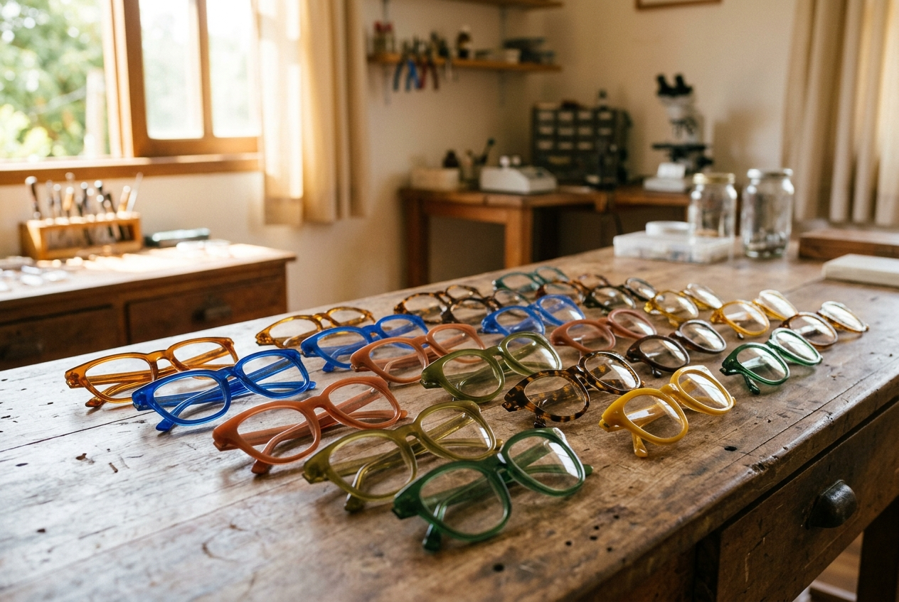
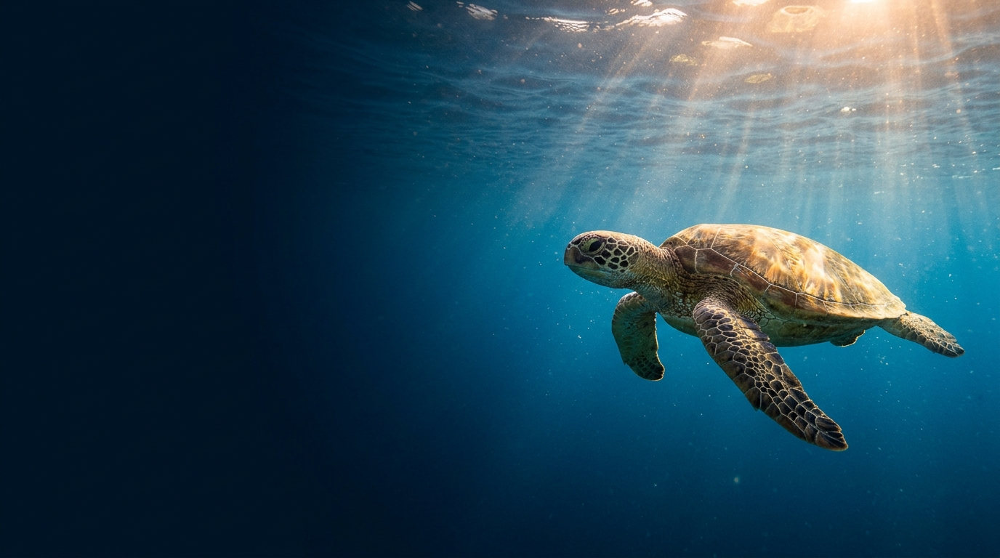
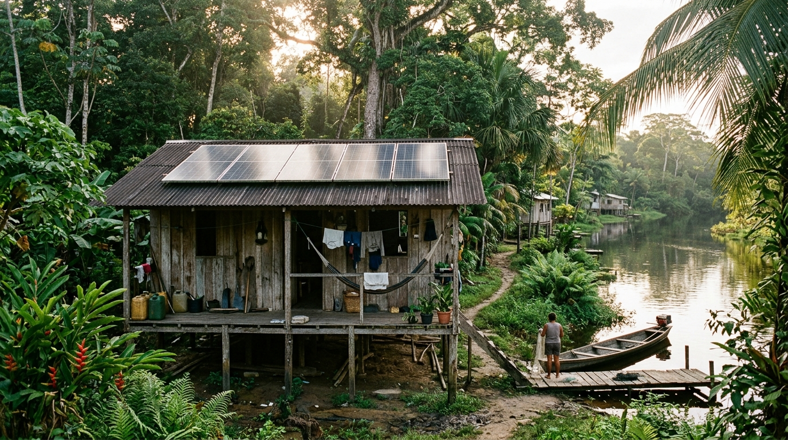
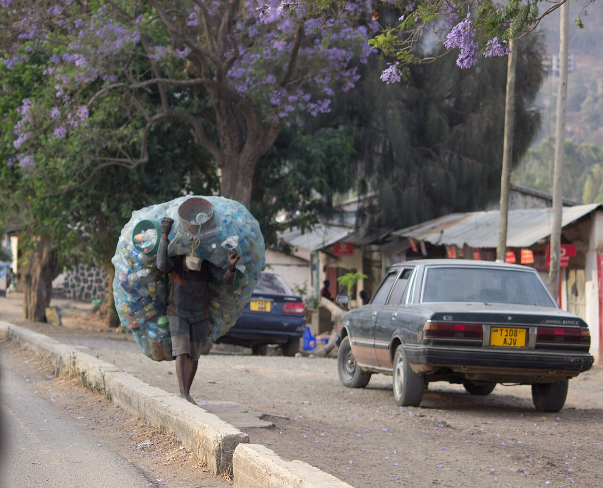
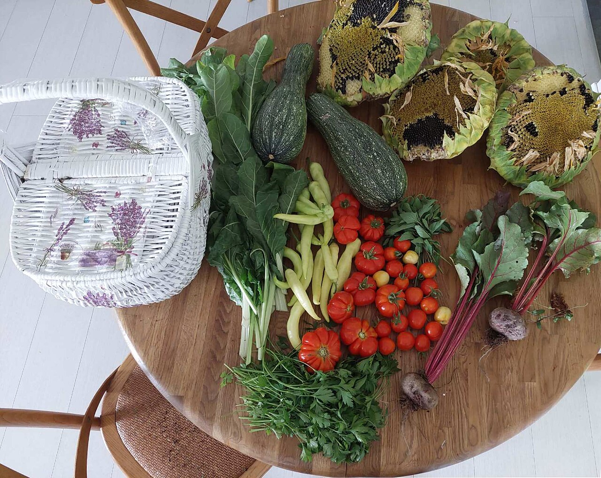
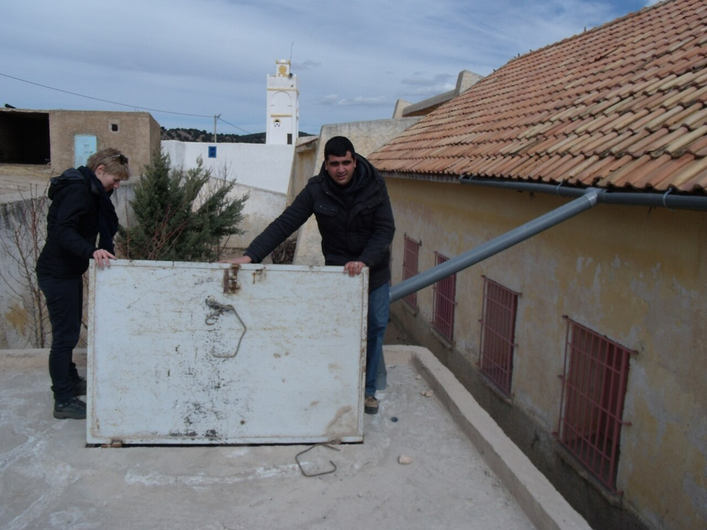

Desmatamento na Amazônia
A Amazônia registrou em 2026 a menor taxa de desmatamento da série histórica do Inpe, com 3.335 km², queda de 41% em relação a 2025. O Cerrado também chegou ao menor nível da série.
Ler notícia completa →
Cansado(a) de ver nóticias negativas o tempo todo? Confira as notícias sobre ESG da atualidade, sua dose diária de positividade e esperança.
Ver as notícias ↓ESG vem do inglês Environmental, Social and Governance (ambiental, social e governança) e é um conjunto de critérios usado para avaliar se uma empresa, ou qualquer organização, cuida do planeta, das pessoas e da forma como é administrada. O E olha para clima, recursos naturais, resíduos e energia; o S para trabalhadores, comunidades, diversidade e direitos humanos; e o G para ética, transparência, combate à corrupção e prestação de contas. O termo ganhou força em 2004, em um relatório do Pacto Global da ONU. Ele conversa diretamente com a Agenda 2030, plano global assinado em 2015 pelos 193 países-membros da ONU, com 17 Objetivos de Desenvolvimento Sustentável (ODS) e 169 metas. Por exemplo, o E se liga aos ODS 6 (água limpa), 7 (energia limpa), 13 (ação climática) e 15 (vida terrestre). O S se liga aos ODS 1 (fim da pobreza), 2 (fome zero), 3 (saúde), 4 (educação) e 5 (igualdade de gênero). O G se liga ao ODS 16 (paz, justiça e instituições eficazes) e ao 17 (parcerias).

A Amazônia registrou em 2026 a menor taxa de desmatamento da série histórica do Inpe, com 3.335 km², queda de 41% em relação a 2025. O Cerrado também chegou ao menor nível da série.
Ler notícia completa →
Em 2025 a capacidade instalada de renováveis cresceu 15,5%, um recorde, e solar e eólica responderam por 96,8% das novas adições.
Ver detalhes da ação →
Com os US$ 500 milhões dos Países Baixos, o fundo já soma US$ 7,8 bilhões em compromissos e vai pagar anualmente países que preservam suas florestas. A meta é US$ 10 bilhões para começar a operar.
Conheça o programa →
A população oficial chegou a 325 aves, o maior número da era de recuperação, mas a espécie segue criticamente ameaçada.
Saiba mais no MDS →
O desmatamento caiu 29%, de 49 para 35 hectares, segundo o Atlas da Mata Atlântica 2024-2025.
Ver detalhes da ação →O governo definiu quais setores vão cumprir, de forma gradual, as regras de medição e relato de emissões. A regulamentação deve terminar em dezembro de 2026.
Ler notícia completa →O Parlamento Europeu aprovou a primeira diretiva anticorrupção do bloco, com 581 votos a favor. As multas para empresas podem chegar a pelo menos 5% do faturamento mundial.
Ver detalhes da ação →Sete em cada dez empresas têm ao menos uma mulher no conselho, contra 55% em 2021.
Conheça o programa →A CGU reconheceu 128 empresas, um recorde, que ganham benefícios em contratações públicas federais.
Saiba mais no MDS →Até julho, 35 jurisdições adotaram os padrões internacionais, e outras 11 planejam adotar. No Brasil, a CVM tornou o relatório opcional em maio.
Ver detalhes da ação →